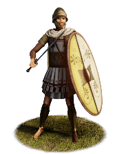
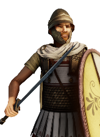

RTR: Imperium Surrectum
RTR: Imperium SurrectumSeleucid Thorakitai


Class: heavy · Category: infantry · Men per unit: 40
Reforms: Unlocked by Adoption of the Thorakitai
Description
Thorakitai (lit. 'breastplate wearers’) are mobile, armoured infantry equipped with javelins and short two-edged swords for thrusting and slashing, who are able to fight effectively at close quarters, protected by their thureoi shields. They wear a simple chiton (tunic) beneath a mail corselet. In addition to the thureos, protection was provided by an iron or bronze Hellenistic helmet (1 Macc. 6.35).
Historical background
The emergence of unarmoured Hellenistic thureophoroi during the early third century was followed by the later recognition that these troops were at a disadvantage when closing in with more heavily equipped enemy troops (Plut. Phil. 9.1). While it is difficult to closely trace the development of a second class of thureos-bearing infantry, this time equipped with body armour (thorakes), it seems clear that Hellenistic armies deployed these troops in the main battleline as circumstances dictated. Such an interpretation is supported by Polybios' description (5.53.8) of Molon's army during his revolt against Antiokhos III. Molon's main battleline in the decisive confrontation in 220 BC was composed of ‘thureophoroi, Galatians and generally all the heavy troops’. The thureophoroi in this passage are classed literally as ‘heavy’ infantry and therefore the likelihood of such troops being armoured is increased, at which point they can be more accurately labelled ‘thorakitai’.
Elsewhere Polybios describes the deployment of thorakitai in support of the Achaian light-armed troops during the same year (4.12.3), as well as their multi-purpose role at Mantineia in 207 BC, at one point supporting the flank of the Achaian phalanx (11.11.4; 11.14.1; 11.15.5). The view that thorakitai were essentially armoured thureophoroi, is further supported by Polybios’ description of the Seleukid army’s crossing of the Elburz in 210 BC (10.29.5-6).
While the precise combat role of thorakitai during the third century remains a subject for debate, the brutal Roman victories at Kynoskephalai, Magnesia and Pydna, which so cruelly exposed the limitations of the ‘Macedonian phalanx’, doubtless caused the Hellenistic kingdoms to reconsider how thorakes-adorned thureophoroi could be most effectively utilised on the battlefield. Consequently, the five thousand men ‘armed after the Roman fashion and bearing breastplates of chain-armour’ who took part in the Seleukid military parade at Daphnai in 165 BC (Polyb. 30.25.3) might indicate the adoption of heavier javelins and scuta-style shields, with swords rather than thrusting spears becoming the weapon of choice for close combat. Perhaps mail armour also became the norm. However, whether a concerted attempt was made to imitate the flexible tactics of the Roman legion remains uncertain.
Even though they are not explicitly mentioned in other armies, it is very likely that similar Hellenistic militaries like those of Bactria, which followed the Seleucid role model, or Aitolia, which favoured flexible soldiers like the Thureophoroi (see their descriptions), also adopted them at some point, and a Ptolemaic soldier who may have been a member of the household guard (Therapeia) is called a member of the Thorakitai Epilektoi in a Ptolemaic Papyrus (P. Mich. inv. 6947). The Attalids of Pergamon integrated Seleucid katoikoi (military settlers) into their army after the Peace of Apameia (188 BC) and thus could have followed the trend (Cohen, The Hellenistic settlements (1995), p. 224). Syracuse was exposed to and allied with the Romans for most of the 3rd century BC (Polyb. I.16.8-9, 3.5.7) while also being traditionally familiar with Celtic mercenaries (Canestrelli, Celtic Warfare (2022), p. 31). Two terracotta figurines of Galatian infantrymen (from Myrina in Asia Minor, Museum of Fine Arts in Boston [Burr, Myrina 1934, 112] and Louvre Cat. II pl. 151b&d]) even demonstrate that similar equipment was later used by Galatians, though it differed enough from the Hellenistic case to warrant their own unit in RIS. Finally, a few distant Greek communities may have employed Thorakitai due to the influences of their neighbours. The Herakleiotes might have had Thorakitai, influenced by the Celtic Galatians to their south. Also in the north-western Black Sea, Histria and Olbia may have used Thorakitai due to the multi-cultural influences of Thracian, Celtic and Scythian warriors.
Stats
| Rank in roster | Rank in roster | Rank in roster | Rank in roster | ||||||||
|---|---|---|---|---|---|---|---|---|---|---|---|
| Men per unit | 40 | ███······· 31% | Attack | 14 | ███████··· 72% | Charge bonus | 12 | ████······ 42% | Defence | 43 | ████████·· 83% |
| · armour | 12 | ███████··· 71% | · defence skill | 26 | ████████·· 78% | · shield | 5 | ██████···· 58% | Morale | 12 | ██████···· 58% |
| Discipline | Normal | Training | Highly trained | Recruitment cost | 2,032 dn | █████····· 51% | Upkeep per turn | 744 dn | ███████··· 72% | ||
| Turns to recruit | 3 |
Weapons
| Primary | Secondary | Primary | Secondary | Primary | Secondary | Primary | Secondary | ||||
|---|---|---|---|---|---|---|---|---|---|---|---|
| Attack | 14 | 11 | Charge bonus | 12 | 13 | Type | thrown · blade | melee · blade | Damage | piercing | piercing |
| Projectile | javelin | — | Range | 50 | — | Ammunition | 2 | — | Properties | Used just before charging into combat | — |
Defence
| Primary | Secondary | Primary | Secondary | Primary | Secondary | Primary | Secondary | ||||
|---|---|---|---|---|---|---|---|---|---|---|---|
| Total | 43 | — | Armour | 12 | — | Defence skill | 26 | — | Shield | 5 | — |
Condition and terrain
| Hit points | 1 | Ground: scrub / sand / forest / snow | 0 / -1 / 0 / -1 | Charge distance | 30 | Formations | Square |
Technical stats
| Time between blows (primary / secondary) | 2.5 s / 2.5 s | Extra fatigue in hot climates | 0 | Collision mass per man (1.0 is normal) | 1.27 | Spacing between men: close / loose | 1 × 1.2 m / 2 × 2.4 m |
| Default ranks | 5 |
In battle: Can sap · Very good stamina
Who can recruit it
A core roster unit for 4 factions, each able to raise it anywhere they hold the right building:
Lysiad Kingdom · Seleucid Empire · Seleucid Rebels (Asia Minor) · Seleucid Rebels (Upper Satrapies)
Exactly what a settlement must have, route by route (3)
| Building | Also requires | Building | Also requires | Building | Also requires | ||
|---|---|---|---|---|---|---|---|
| Indirect Rule | Tier 2 Military Industrial Complex · Adoption of the Thorakitai · Tier 1 Colony | Direct Rule | Tier 2 Military Industrial Complex · Adoption of the Thorakitai · Tier 1 Colony | Homeland | Tier 2 Military Industrial Complex · Adoption of the Thorakitai |